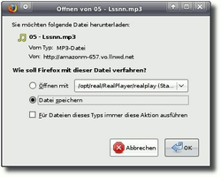
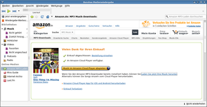

Amazon MP3-Downloader
Archivierte Anleitung
Dieser Artikel wurde archiviert, da er - oder Teile daraus - nur noch unter einer älteren Ubuntu-Version nutzbar ist. Diese Anleitung wird vom Wiki-Team weder auf Richtigkeit überprüft noch anderweitig gepflegt. Zusätzlich wurde der Artikel für weitere Änderungen gesperrt.
Zum Verständnis dieses Artikels sind folgende Seiten hilfreich:
Seit dem 1. April 2009 gehört der Internethändler Amazon.de  zum Kreis derjenigen Anbieter, bei denen man DRM-freie Musik im MP3-Format kaufen kann. Die Suche und der Einkauf funktionieren genau wie bei allen anderen Artikeln, die Amazon anbietet. Bezahlen kann man seine Musik entweder per Kreditkarte oder Abbuchung vom Bankkonto.
zum Kreis derjenigen Anbieter, bei denen man DRM-freie Musik im MP3-Format kaufen kann. Die Suche und der Einkauf funktionieren genau wie bei allen anderen Artikeln, die Amazon anbietet. Bezahlen kann man seine Musik entweder per Kreditkarte oder Abbuchung vom Bankkonto.
Technischer Hintergrund¶
Qualität der Musik¶
Amazon verwendet bei der Komprimierung der Musikdateien eine variable Bitrate. Durchschnittlich haben die Lieder eine Bitrate von 256 Kilobits pro Sekunde. Diese Kodierung liegt sogar oberhalb der Empfehlung für den MP3-Encoder LAME und gewährleistet eine sehr gute Qualität der Dateien.
Herkunft der Dateien¶
Amazon hält die MP3-Dateien nicht selbst vor, sondern arbeitet dazu in Deutschland, wie auch in den USA, mit dem Dienstleister Limelight Networks zusammen. Das börsennotierte Unternehmen hat seinen europäischen Sitz in London und stellt für eine Vielzahl von Händlern sein Content Distribution Network zur Verfügung.
Dateidownload¶
Seit der Einstellung des Amazon MP3-Downloaders bzw. der Einführung des Cloud Players als Nachfolger können nicht nur einzelne Lieder, sondern auch komplette Alben ohne Verwendung einer speziellen Software direkt über die jeweiligen Internetseiten erstanden werden.
Aber nur einzelne Lieder lassen sich auch problemlos aus dem Cloud Player herunterladen. Möchte man jedoch ein komplettes Album oder mehrere Lieder aus dem Cloud Player auf einmal herunterladen, so muss man alternative Drittprogramme benutzen. Ansonsten bleibt nur der mühsame manuelle Download der einzelnen MP3s im Webbrowser.
Leider ist dies nicht so einfach. Für den Download von Dateien benötigt man in externen Programmen wie clamz eine sogenannte .amz-Datei. Diese Datei kann man direkt nach dem Kauf von einem oder mehrere Lieder oder einem ganzen Album auf der Amazon-Seite herunterladen. Die Datei ist danach aber nur wenige Tage gültig.
Möchte man einige Zeit nach dem Kauf eines einzelnen Artikels, d.h. eines kompletten Albums oder eines einzelnen MP3-Titels, diesen erneut herunterladen, gibt es eine Möglichkeit, die .amz-Datei neu zu generieren. Beschreibung siehe Forum.
Wenn man aber in einer Bestellung mehrere Artikel gekauft hat bzw. nachträglich Lieder aus der eigenen Sammlung herunterladen will (das betrifft auch ganze Alben), gibt es derzeit keine Möglichkeit, an die .amz-Datei zu kommen.
Einzelne Lieder kaufen und herunterladen¶

Der Kauf und Download einzelner Lieder ist nicht weiter schwierig. Man muss dazu lediglich als Amazon-Kunde angemeldet sein. Um eine MP3-Datei zu erwerben, sucht man auf der Internetseite amazonmp3.de nach dem entsprechenden Künstler bzw. direkt nach dem Titel des Stücks. Mit dem kleinen Pfeil vor dem Namen kann man in das Stück hineinhören. Schließt man nun die Bestellung mit der Schaltfläche Jetzt mit 1-Click kaufen hinter dem Titel ab, so wird man von Amazon zum Cloud Player weitergeleitet, wo der Einzeltitel direkt im Browser heruntergeladen werden kann.
Der Download wird umgehend gestartet. Es öffnet sich das Downloadfenster des verwendeten Browsers. Hier kann man in der Regel auswählen, was mit der Datei passieren soll. Entscheidet man sich für das "Speichern", so wird die Datei in den gewählten Ordner gespeichert.
Hinweis:
Da die Dateien nicht von Amazon selbst stammen, sondern von einem fremden Server, ist darauf zu achten, dass man diesen nicht blockiert, etwa durch die Firefox-Erweiterung NoScript.
Mehrere Lieder (Alben) kaufen und herunterladen¶
Der Kauf kompletter Alben funktioniert genauso wie der Kauf von Einzeltiteln. Möchte man aber komplette Alben bzw. mehrere Lieder auf einmal herunterladen, so benötigt man spezielle Download-Software. Da Amazon seine Download-Software für Linux mit der Einführung des Cloud Players eingestellt hat, kann man freie Werkzeuge wie Clamz nutzen, wenn man die Lieder nicht mühsam einzeln im Cloud Player herunterladen will (siehe hierzu auch oben).
Freie Zugangssoftware¶
Seit der Einstellung des offiziellen Programms muss man zum Download ganzer Alben oder mehrerer Lieder eine der freien Alternativen benutzen. Die Programme laden die gewählte Musik anhand einer .amz-Datei herunter.
Clamz¶
Clamz  ist ein in C geschriebenes Programm für die Kommandozeile. Es kann aus den offiziellen Paketquellen installiert werden[1]:
ist ein in C geschriebenes Programm für die Kommandozeile. Es kann aus den offiziellen Paketquellen installiert werden[1]:
clamz
 mit apturl
mit apturl
Paketliste zum Kopieren:
sudo apt-get install clamz
sudo aptitude install clamz
Bei der Installation dieser Pakete werden auch noch weitere abhängige Pakete mit installiert.
Alternativ kann man auch die neueste Version von Clamz von der Projektseite  heruntergeladen, entpacken[3] und anschließend das Programm kompilieren[4].
heruntergeladen, entpacken[3] und anschließend das Programm kompilieren[4].
Clamz wird über das Terminal gestartet[2][5]. Dabei wird nach dem Programmnamen als Parameter die .amz-Datei angegeben.
clamz name_der_amz-Datei.amz
Eine Konfigurationsdatei, in der verschiedene Einstellungen vorgenommen werden können, findet sich in der Datei ~/.clamz/config.
Banshee-Integration¶
 Wenn man die Musik über die Amazon-Integration in Banshee gekauft hat, klickt man nach dem Einkauf einfach auf den Link „Laden Sie jetzt Ihre Musik herunter“. Es wird jetzt automatisch die amz-Datei heruntergeladen und Banshee startet den Download der Lieder. Diese werden danach automatisch in die Bibliothek integriert.
Pymazon¶
Pymazon wird nicht mehr aktiv weiterentwickelt. Durch eine Änderung in den AMZ-Dateien führt ein Klick auf den Downloadbutton nur zu einem Absturz . Die in der Fehlerdatenbank beschriebene korrigiert Version funktioniert leider auch nicht (getestet unter Xubuntu 12.04 LTS und Xubuntu 13.10).
Links¶
Amazon MP3-Downloader nicht mehr für Linux - Forendiskussion
Amazon MP3-Hilfe - Links auf umfangreiche Hilfeseiten zum Thema
Amazon MP3-FAQ - Oft gestellte Fragen zum MP3-Service
Amazon MP3 Shop - Nutzungsbedingungen - Bedingungen für die Nutzung der Software und der Musikdateien
Limelight Networks - Informationen zum Dienstleister
- Erstellt mit Inyoka
-
 2004 – 2017 ubuntuusers.de • Einige Rechte vorbehalten
2004 – 2017 ubuntuusers.de • Einige Rechte vorbehalten
Lizenz • Kontakt • Datenschutz • Impressum • Serverstatus -
Serverhousing gespendet von